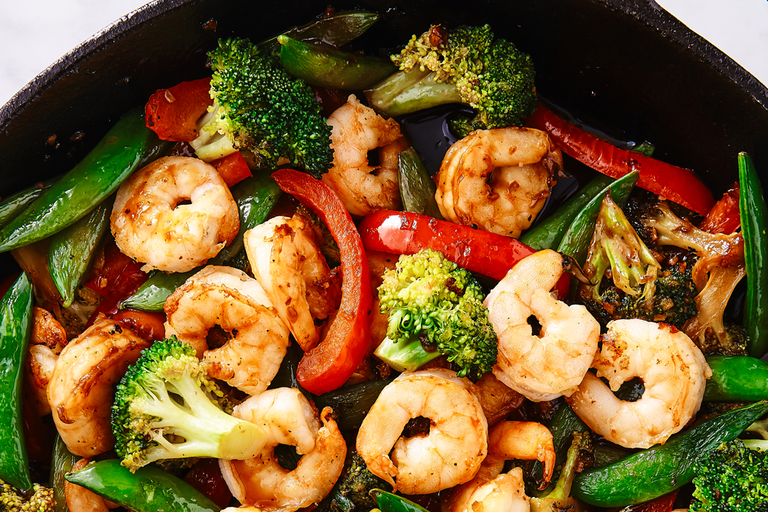

Teriyaki Shrimp and Vegetable Stir-Fry

The Tasty Shrimp Stir Fry
This recipe for teriyaki shrimp stir fry is shrimp and vegetables coated in a homemade teriyaki sauce and
served over brown rice. An easy and healthy dinner option that’s ready in less than 20 minutes!
You can never go wrong with a good stir fry, my family enjoys honey garlic chicken stir fry, beef and
broccoli stir fry and this simple yet satisfying shrimp stir fry.
- 2 heads of baby bok choy
- 2 tablespoons vegtable oil
- 1 tablespoon greated fresh giner root
- 1/2 pund uncooked medium shhrimp, peeled and deveined
- 1 cup broccoli florets
- 1 cup sliced zucchini
- 2 tablespoons soy sauce
- 2 tabklespoons sweet vermouth
- 2 tablespoons brown sugar
- 2 tablespoons brown sugar
- 2 teasoons rice vinegar
- 1 tablespoon cornstarch
Slice the stem ends of the bok choy off to separate the
leaves. Wash and drain the leaves; discard the ends. Cut the leafy green part of the leaves from the white part, keeping both parts separated.
Heat a large skillet or wok over high heat; add oil.
Cook and stir ginger in the hot oil for 1 minute. Add shrimp and continue cooking until they are bright pink and opaque, reducing heat as necessary
to prevent burning, 2 to 3 minutes.
Stir white pieces of bok choy, broccoli,
zucchini, soy sauce, vermouth, brown sugar, and rice vinegar into the skillet. Cover and continue cooking until bok choy begins to soften, 4 to 5 minutes
Stir to coat the vegetables with the liquid. Sprinkle with cornstarch and stir until it mixes in and disappears. Top with the green pieces of bok
choy, cover, and continue cooking until leaves start to wilt and the sauce thickens, 1 to 2 minutes. Stir to coat everything with sauce. Serve hot.